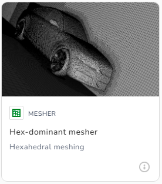
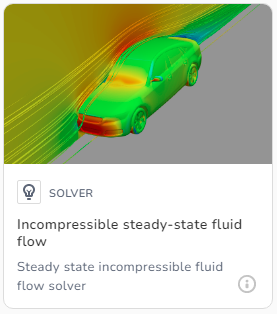

mixing elbow tutorial
mixing elbow summary
The mixing elbow is a 3D pipe geometry with a main inlet and outlet, and a secondary inlet on the curved section of the pipe. The case is designed to demonstrate the 3D mixing process which occurs when a secondary flow is injected into a primary flow at different speed. The main pipe geometry is 1.0m diameter and the secondary inlet is 0.5m diameter. The single STL file used in this demo contains both the pipe geometry and the inlets and outlet geometry, so there is no need for multiple STL files. The meshing will be done with the snappyHexMesh application (this is currently the only mesher available). We will be using the simpleFoam (steady-state) flow solver, since we are modelling the incompressible flow of water, with turbulence. There are no temperature effects included in this analysis, since we are using the standard form of the simpleFoam solver, which does not include temperature.
the dicehub process
When using the Dicehub platform to complete an analysis, the following process is used. You start with an STL file which has to be uploaded to the meshing application. When the meshing is completed, the mesh has to be imported into the solver. When the solver has finshed you can view the flow solution results online or download them to your machine. The various stages of the mesher and solver setup will be very familiar if you have any previous experience of OpenFoam. Here is a brief overview of the process:
- a) create new project
- b) mesh generation
- - create meshing application
- - upload STL file to mesher
- - setup and run the mesher
- (work through steps 1-10)
- - inspect the mesh (if needed)
- - download the mesh (if needed)
- c) flow solution
- - create solver application
- - import mesh into solver
- - setup and run the solver
- (work through steps 1-10)
- - check the convergence
- - inspect flow solution (if needed)
- - download flow solution (if needed)
a) create new project
- go to the dicehub website and login to your account
- to create a new project:
- - select New project
-
- - or +New and New project (top right)
-
- - enter a project name such as "mixing elbow"
- - select the visibility of your project eg internal
- - select the Create Project button
- now you have created a new project directory where
- the mesher and solver applications will be located
b) mesh generation
- hover over the image where it says:
- MESHER - Hex dominant mesher
- 
-
- then select Create Application...
- this chooses the snappyHexMesh mesher,
- and takes you to the mesh setup as follows:
-
- 1. Geometries
- 2. Background Mesh
- 3. Material Point
- 4. Edges Refinement
- 5. Surface Refinement
- 6. Volume Refinement
- 7. Boundary Layers
- 8. Cell Zones
- 9. Run
- 10. Result
-
- NOTE:
- each meshing application name is created randomly
- for example epic_cohen (Mesher)
- this can be changed by clicking and editting it
-
1. Mesher > Geometries
2. Mesher > Background Mesh
3. Mesher > Material Point
4. Mesher > Edges Refinement
5. Mesher > Surface Refinement
6. Mesher > Volume Refinement
7. Mesher > Boundary Layers
8. Mesher > Cell Zones
9. Mesher > Run
10. Mesher > Result
c) flow solution
- hover mouse over the car image where it says:
- SOLVER - Incompressible steady-state fluid flow
- 
- then select Create Application...
- this chooses the simpleFoam solver,
- and takes you to the solver setup as follows:
-
- 1. Mesh Import
- 2. Materials
- 3. Turbulence
- 4. Boundary Conditions
- 5. Initialisation
- 6. Solver Settings
- 7. Numerics
- 8. Monitors
- 9. Run
- 10. Result
-
- NOTE:
- each solver application name is created randomly
- (eg. sleepy_beaver (ISS Solver))
- this can be changed by clicking and editting it
-
1. Solver > Mesh Import
2. Solver > Materials
3. Solver > Turbulence
4. Solver > Boundary Conditions
5. Solver > Initialisation
6. Solver > Solver Settings
7. Solver > Numerics
8. Solver > Monitors
9. Solver > Run
10. Solver > Result